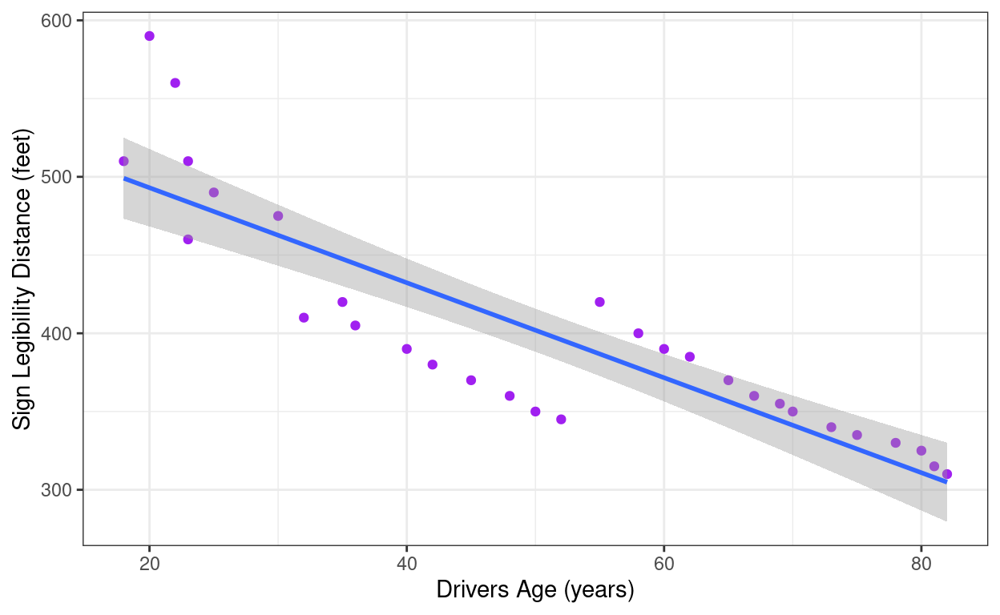
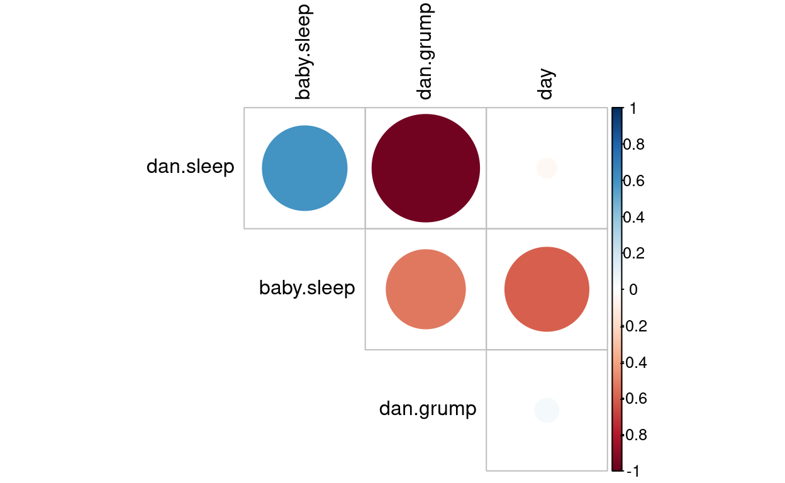
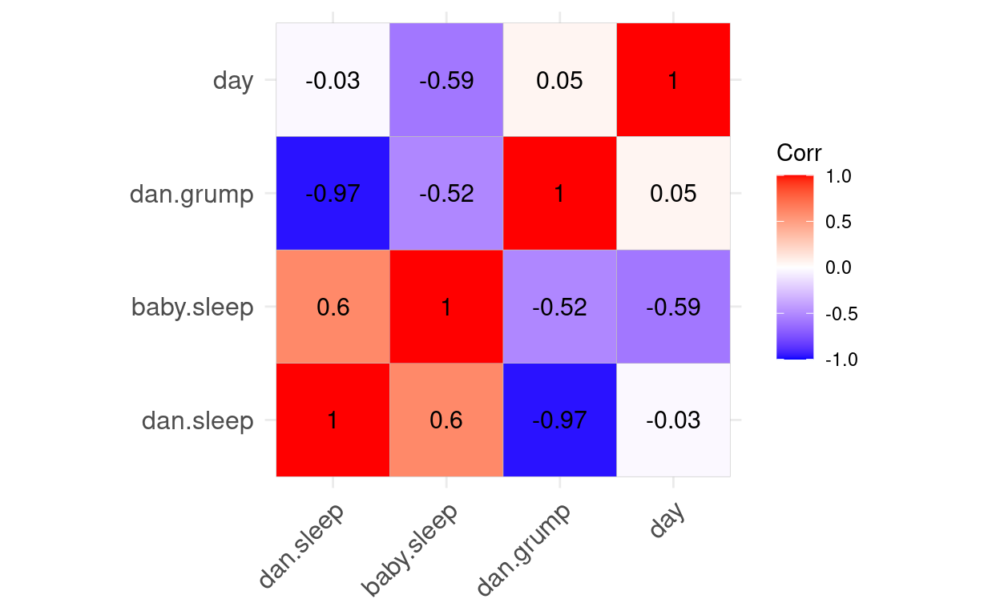

Relationships Between Quantitative Variables
What’s the Purpose of Correlation?
Correlation helps understand how are two quantitative variables related. We need to see whether as one variable increases, the other increases, decreases or stays the same.
The variance tells us by how much scores deviate from the mean for a single variable.

Covariance is similar – it tells is by how much scores on two variables differ from their respective means.
If both values for a person are above or below the mean at the same time, they contribute positively to the covariance. If one is above the mean and the other is below, they contribute negatively. By multiplying each pair of deviations and averaging them, we get the covariance — a summary of how the two variables change together.


Problems with covariance
It depends upon the units of measurement. (E.g. The covariance of two variables measured in Miles might be 4.25, but if the same scores are converted to km, the covariance is 11.)
One solution: standardise it! Divide by the standard deviations of both variables.
The standardised version of covariance is known as the correlation coefficient. It is relatively affected by units of measurement.
Correlation Coefficient
Correlation builds on this idea by taking covariance and dividing it by the standard deviations of both variables. This standardization produces a value between -1 and +1, making it easier to interpret and compare across different datasets.


Partial and Semi-Partial Correlations
Partial correlation: Measures the relationship between two variables, adjusting for the effect that a third variable has on them both. (i.e., Z’s effect on X and Y)
Semi-partial correlation: A measure of the relationship between two variables while adjusting for the effect that one or more additional variables have on one of those variables. If we call our variables x and y, it gives us a measure of the variance in y that x alone shares. (i.e., Z’s effect on X only)
Coefficient of determination, r2
By squaring the value of r you get the proportion of variance in one variable shared by the other (i.e., the proportion of variance in one variable that can be explained by the other). For example, if r = 0.8, then r2 = 0.64, so 64% of the variation in Y is explained by X.
Process

Visualizing Relationships
Scatterplots
Each point represents one observation:
x-axis: explanatory variable
y-axis: response variable
ggplot(data = signdist, aes(x = Age, y = Distance)) +
geom_point(color = "purple") +
theme_bw() +
labs(x = "Drivers Age (years)", y = "Sign Legibility Distance (feet)") +
stat_smooth(method = lm)## `geom_smooth()` using formula = 'y ~ x'
What to Look For
- Direction: Positive or Negative
- Form: Linear, Curvilinear, or Clusters
- Strength: How tightly points follow the trend
- Outliers: Points that deviate from the pattern
Quantifying Relationships: The Correlation Coefficient (r)
r varies between -1 and +1 and may be conceptualized as an effect size:
0 = no relationship
±.1 = small effect
±.3 = medium effect
±.5 = large effect
Update the correlation value in the code below. Run the code to create a plot.
library(ggplot2)
library(MASS)
library(scales)
# Set the correlation value here
r <- 0.3
# -----------------------------------
# Generate data with specified correlation
Sigma <- matrix(c(1, r, r, 1), ncol = 2)
data <- MASS::mvrnorm(n = 100, mu = c(0, 0), Sigma = Sigma)
df <- data.frame(
x = rescale(data[, 1], to = c(1, 10)),
y = rescale(data[, 2], to = c(1, 10))
)
# Create plot
ggplot(df, aes(x = x, y = y)) +
geom_point(color = "orange", alpha = 0.6) +
geom_smooth(method = "lm", color = "darkblue", se = FALSE) +
xlim(1, 10) + ylim(1, 10) +
labs(
title = paste0("Correlation: r = ", r),
x = "Duration of performance (minutes)",
y = "Time after performance before leaving (mins)")Calculating Correlations in R
With cor()
cor(x = signdist$Age, y = signdist$Distance)## [1] -0.8675492With corr.test()
cor.test(x = signdist$Age, y = signdist$Distance, method = "pearson")##
## Pearson's product-moment correlation
##
## data: signdist$Age and signdist$Distance
## t = -9.2302, df = 28, p-value = 5.472e-10
## alternative hypothesis: true correlation is not equal to 0
## 95 percent confidence interval:
## -0.9354441 -0.7379167
## sample estimates:
## cor
## -0.8675492library(psych)##
## Attaching package: 'psych'## The following objects are masked from 'package:ggplot2':
##
## %+%, alphacorr.test(x = signdist$Age, y = signdist$Distance)## Call:corr.test(x = signdist$Age, y = signdist$Distance)
## Correlation matrix
## [1] -0.87
## Sample Size
## [1] 30
## These are the unadjusted probability values.
## The probability values adjusted for multiple tests are in the p.adj object.
## [1] 0
##
## To see confidence intervals of the correlations, print with the short=FALSE optionCorrelation Matrixes
round(cor(parenthood[, c("dan.sleep", "baby.sleep", "dan.grump")]), 2)## dan.sleep baby.sleep dan.grump
## dan.sleep 1.00 0.60 -0.97
## baby.sleep 0.60 1.00 -0.52
## dan.grump -0.97 -0.52 1.00library(psych)
corr.test(parenthood[, c("dan.sleep", "baby.sleep", "dan.grump")])## Call:corr.test(x = parenthood[, c("dan.sleep", "baby.sleep", "dan.grump")])
## Correlation matrix
## dan.sleep baby.sleep dan.grump
## dan.sleep 1.00 0.60 -0.97
## baby.sleep 0.60 1.00 -0.52
## dan.grump -0.97 -0.52 1.00
## Sample Size
## [1] 10
## Probability values (Entries above the diagonal are adjusted for multiple tests.)
## dan.sleep baby.sleep dan.grump
## dan.sleep 0.00 0.13 0.00
## baby.sleep 0.07 0.00 0.13
## dan.grump 0.00 0.12 0.00
##
## To see confidence intervals of the correlations, print with the short=FALSE optionlibrary(Hmisc)##
## Attaching package: 'Hmisc'## The following object is masked from 'package:psych':
##
## describe## The following objects are masked from 'package:dplyr':
##
## src, summarize## The following objects are masked from 'package:base':
##
## format.pval, unitsrcorr(as.matrix(parenthood[, c("dan.sleep", "baby.sleep", "dan.grump")]), type = "pearson")## dan.sleep baby.sleep dan.grump
## dan.sleep 1.00 0.60 -0.97
## baby.sleep 0.60 1.00 -0.52
## dan.grump -0.97 -0.52 1.00
##
## n= 10
##
##
## P
## dan.sleep baby.sleep dan.grump
## dan.sleep 0.0674 0.0000
## baby.sleep 0.0674 0.1207
## dan.grump 0.0000 0.1207Alternative Method that will automatically exclude Non-Numeric Variables
Using lsr package:
library(lsr)
correlate(your_data)library(lsr)
correlate(parenthood)##
## CORRELATIONS
## ============
## - correlation type: pearson
## - correlations shown only when both variables are numeric
##
## dan.sleep baby.sleep dan.grump day
## dan.sleep . 0.599 -0.967 -0.032
## baby.sleep 0.599 . -0.523 -0.590
## dan.grump -0.967 -0.523 . 0.048
## day -0.032 -0.590 0.048 .Additional Visualizations: Correlation Matrix
library(corrplot)## corrplot 0.95 loadedcor_matrix <- cor(parenthood)
corrplot(cor_matrix,
method = "circle",
type = "upper",
tl.col = "black",
diag = FALSE)
library(ggcorrplot)
cor_matrix <- cor(parenthood)
ggcorrplot(cor_matrix,
lab = TRUE
)
Nonparametric tests
Spearman’s rho
Pearson’s correlation on the ranked data.
cor(effort$hours, effort$grade, method = "spearman")## [1] 0.9636364cor(signdist$Age, signdist$Distance, method = "spearman")## [1] -0.9100525library(psych)
corr.test(effort$hours, effort$grade, method = "spearman")## Call:corr.test(x = effort$hours, y = effort$grade, method = "spearman")
## Correlation matrix
## [1] 0.96
## Sample Size
## [1] 10
## These are the unadjusted probability values.
## The probability values adjusted for multiple tests are in the p.adj object.
## [1] 0
##
## To see confidence intervals of the correlations, print with the short=FALSE optioncorr.test(signdist$Age, signdist$Distance, method = "spearman")## Call:corr.test(x = signdist$Age, y = signdist$Distance, method = "spearman")
## Correlation matrix
## [1] -0.91
## Sample Size
## [1] 30
## These are the unadjusted probability values.
## The probability values adjusted for multiple tests are in the p.adj object.
## [1] 0
##
## To see confidence intervals of the correlations, print with the short=FALSE optionKendall’s tau
Kendall’s tau is often preferred in small samples because it has better statistical properties (more robust, smaller variance).
cor(parenthood$dan.sleep, parenthood$dan.grump, method = "kendall") ## [1] -0.874083cor(parenthood$baby.sleep, parenthood$dan.grump, method = "kendall") ## [1] -0.4600437library(psych)
corr.test(parenthood$dan.sleep, parenthood$dan.grump, method = "kendall") ## Call:corr.test(x = parenthood$dan.sleep, y = parenthood$dan.grump,
## method = "kendall")
## Correlation matrix
## [1] -0.87
## Sample Size
## [1] 10
## These are the unadjusted probability values.
## The probability values adjusted for multiple tests are in the p.adj object.
## [1] 0
##
## To see confidence intervals of the correlations, print with the short=FALSE optioncorr.test(parenthood$baby.sleep, parenthood$dan.grump, method = "kendall") ## Call:corr.test(x = parenthood$baby.sleep, y = parenthood$dan.grump,
## method = "kendall")
## Correlation matrix
## [1] -0.46
## Sample Size
## [1] 10
## These are the unadjusted probability values.
## The probability values adjusted for multiple tests are in the p.adj object.
## [1] 0.18
##
## To see confidence intervals of the correlations, print with the short=FALSE optionCautions and Best Practices
Always Plot Your Data
- Avoid relying solely on the correlation coefficient
- Anscombe’s Quartet demonstrates
why plotting matters: Even if data looks similar on paper (same
means, variances, correlations), you might be missing the full picture.
Visualizing the data reveals structure and anomalies that summary stats
can’t.

Reminder
Correlation ≠ Causation: Even strong correlations do not imply one variable causes the other.
The third-variable problem: In any correlation, causality between two variables cannot be assumed because there may be other measured or unmeasured variables affecting the results.